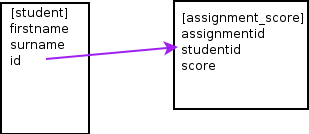

- 
- SELECT firstname, surname, score from student, assignment_score WHERE student.id = assignment_score.studentid
- SELECT firstname, surname, score FROM student JOIN assignment_score on student.id = assignment_score.studentid;
- What's the point? well...there isn't. Yet.
- Finds all matched rows. Also called an INNER JOIN
- Multi-table JOINs come along in a bit
NEXT
PREVIOUS
Master Index